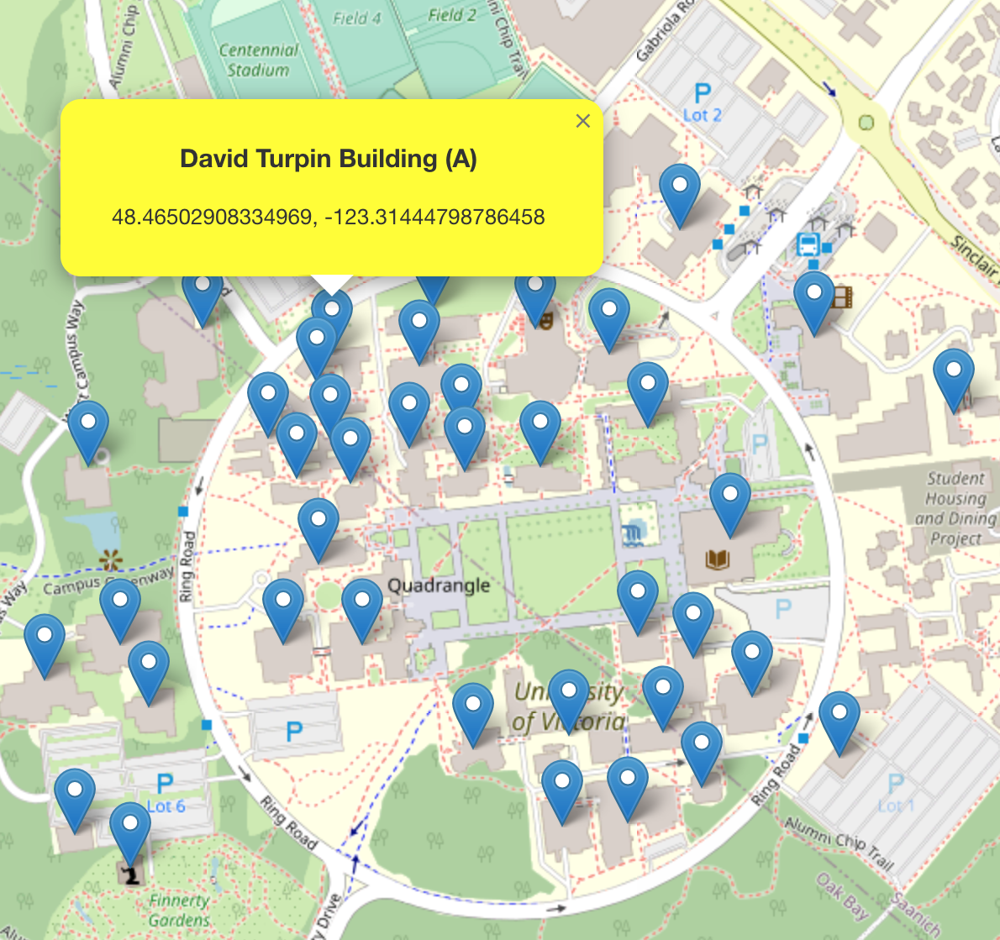

Geospatial exploration of the University of Victoria.
GitHub RepoThis project was initiated to capture the precise geographic coordinates of various buildings on the University of Victoria campus. Using a combination of geospatial tools and manual validation, we've mapped out the entire UVic campus in fine detail.
The process began with obtaining a high-resolution campus map of UVic. From there, geospatial software was used to mark out each building and extract its geographical coordinates. To ensure accuracy, each point was manually validated using satellite imagery and on-ground GPS tools.
Below is an interactive map showing the locations of buildings using a pixel-pixel to latitude-longitude conversion that does not take into account the 0.1 radian tilt of the map.
This map does take into account the tilt.
The mapped coordinates are not just for visual representation. They can be used for various applications, such as:
Working on this project was both challenging and enlightening. Mapping out an entire campus requires attention to detail, patience, and a good understanding of geospatial tools. It was a valuable experience in geospatial technology and its real-world applications.